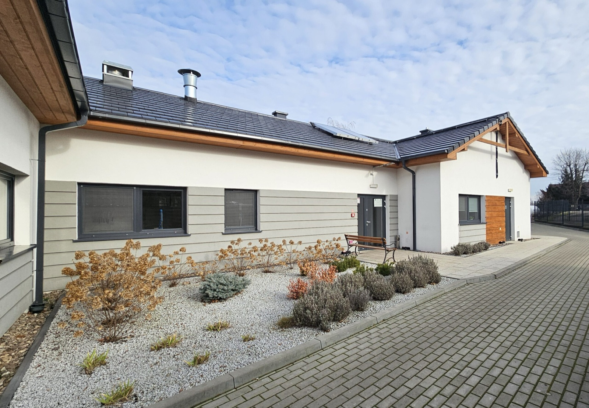
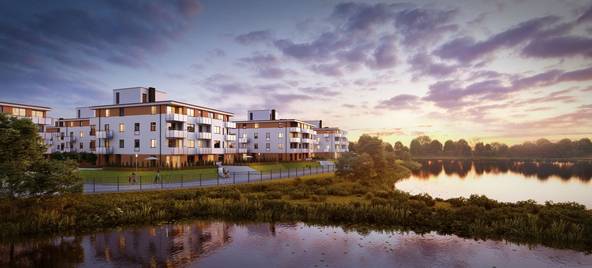
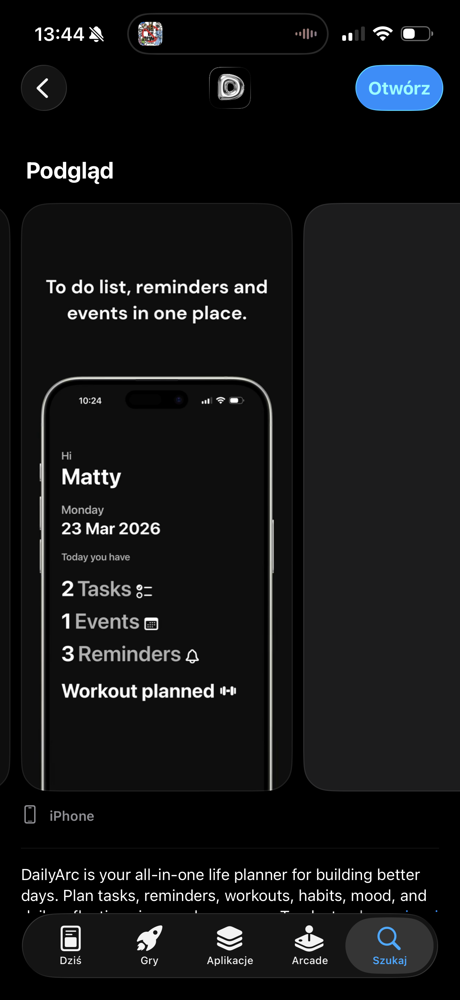
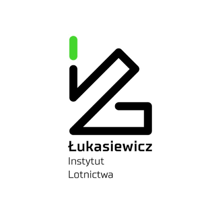
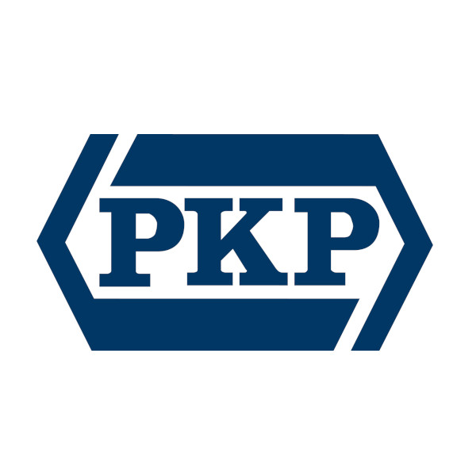
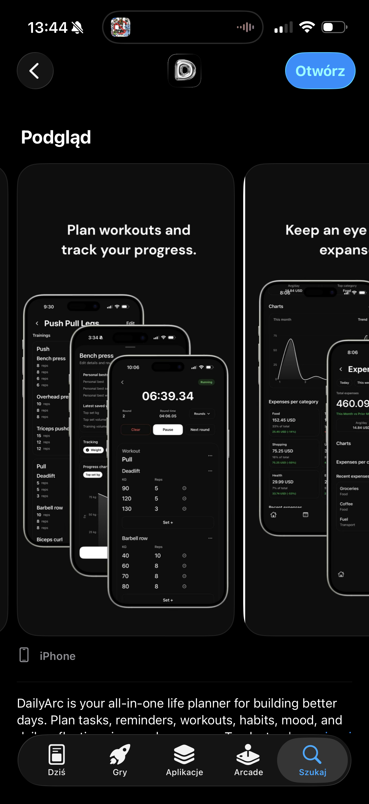

Adaptujemy budynek na miejsca doraźnego schronienia w Gminie Inowrocław
Prace dla Gminy Inowrocław potrwają do końca listopada 2026 roku.





 Inwestycje mieszkaniowe
Budynki wielorodzinne dla TBS, SIM i gmin.
Zobacz inwestycje mieszkaniowe
Inwestycje mieszkaniowe
Budynki wielorodzinne dla TBS, SIM i gmin.
Zobacz inwestycje mieszkaniowe
O firmie
W całej Polsce realizujemy obiekty użyteczności publicznej, przemysłowe i mieszkaniowe. Prowadzimy wiele budów jednocześnie, a nasza kadra kierownicza i pracownicy mają wieloletni staż.
W 2023 roku znaleźliśmy się na liście Diamentów Forbesa.
Poznaj firmę WiMaksBudowa budynku mieszkalnego wielorodzinnego nr 1 z parkingiem w Pruszkowie.
Budowa budynku mieszkalnego wielorodzinnego z garażem podziemnym oraz niezbędną infrastrukturą techniczną na działce nr 628/9 w Kozienicach.
Kompleksowy remont budynków przy ul. Marii Kazimiery 18/26 w Warszawie.
Rozbudowa i przebudowa Prosektorium w budynku nr 7.
Wykonanie dokumentacji projektowej oraz robót budowlanych obejmujących budynek „W1W2H”.
Przebudowa i remont budynku Bielańskiego Środowiskowego Domu Samopomocy m.st. Warszawy przy ul. Grębałowskiej 14 w Warszawie.